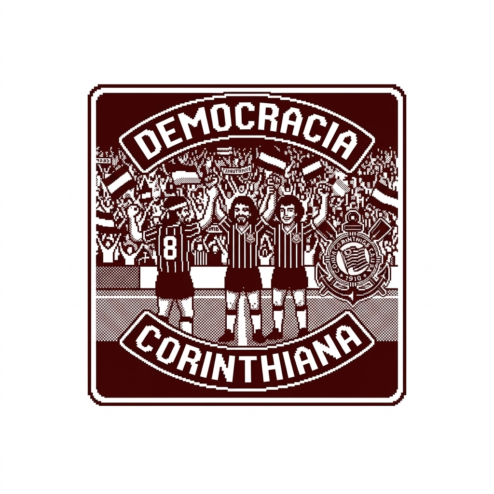

historia corinthiana
por: Yasmim Rota Neris
Bem vindos ao meu site. Aqui vou compartilhar historias e curiosidades da historia do corinthians
vou compartilhar conhecimentos sobre a democracia corinthiana

por: Yasmim Rota Neris
Bem vindos ao meu site. Aqui vou compartilhar historias e curiosidades da historia do corinthians